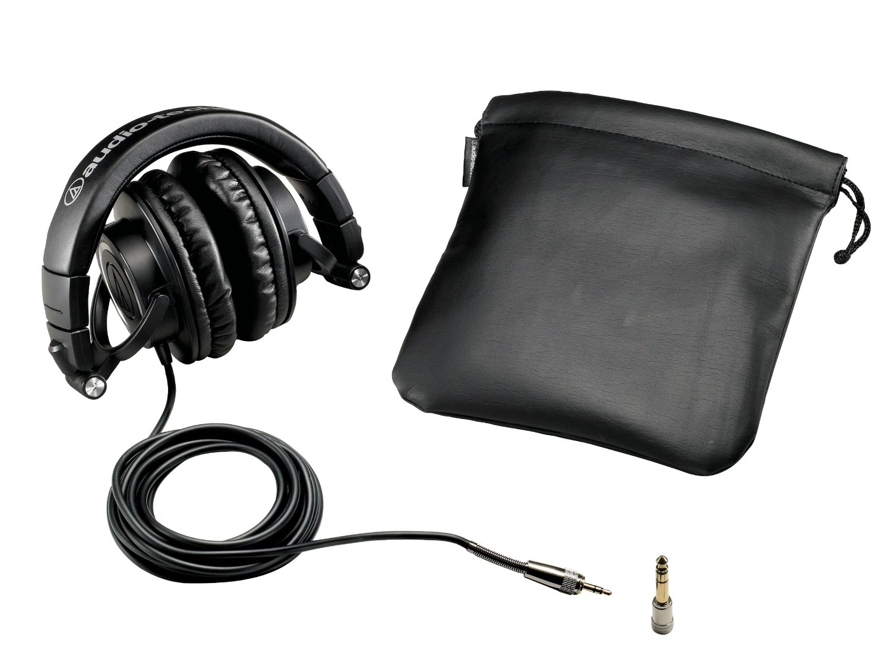
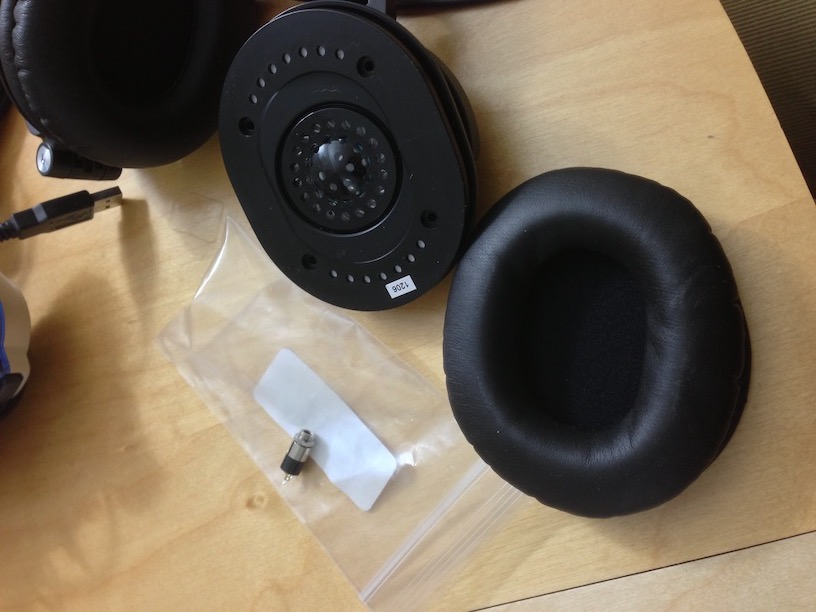
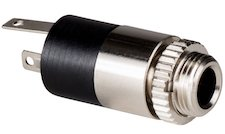
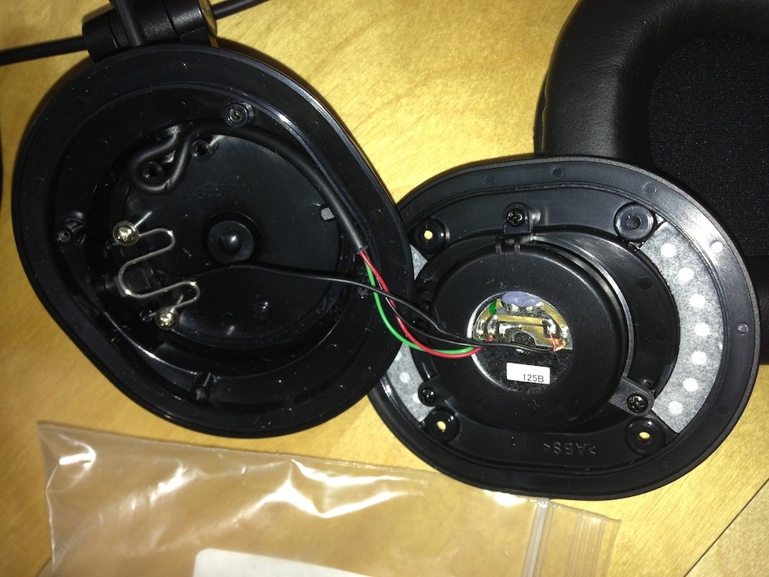
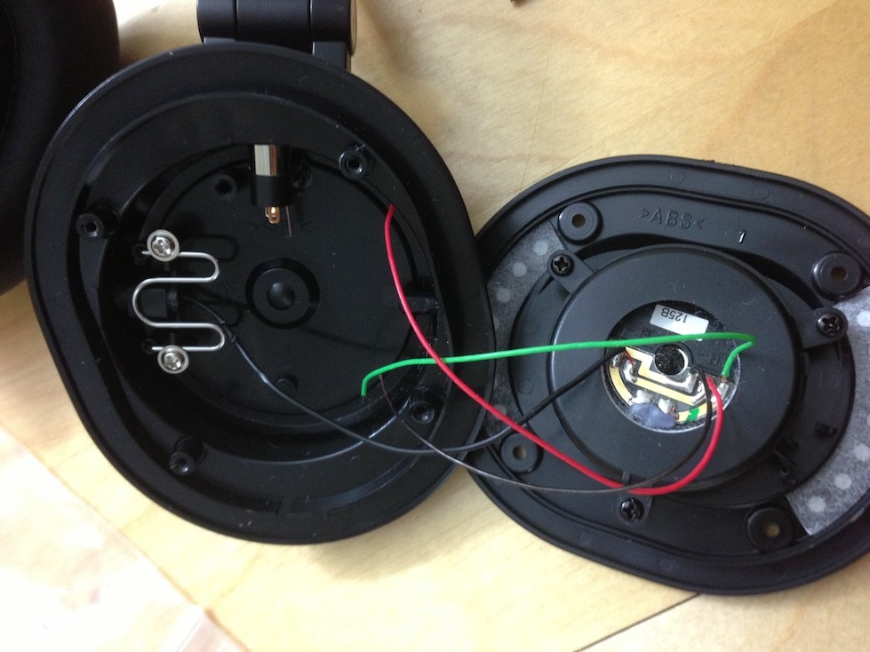
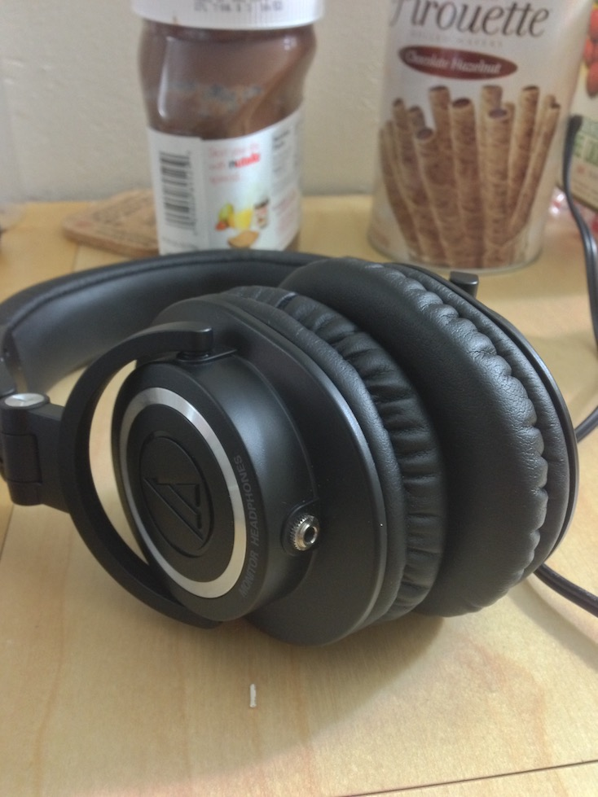

ATH-M50 Headphone Jack Mod
Audio-Technica’s ATH-M50 headphones have been renowned amongst audiophiles circles as one of the best “bang-for-the-buck” purchases. Its relatively low price, good construction, and solid sound performance has given it a reputation as a go-to headphone for those wishing to dabble into the realm of audiophile gear. It boasts solid performance across most audio categories (bass, mids, treble, soundstage, separation) while still having a slightly bass-boosted sound signature and presentation that is also friendly to the inexperienced ear.
Unfortunately, one of the most griped problems is the issue of its cable. The headphones are designed for portable use, given its collapsible ear cups, yet use a cable that is both too long (3.5m) to be easily portable and not built to be detached from the headphones. Thus, I set out to install a cable jack in my M50 so that I could use my own cables.
First, I bought the smallest 1/8” audio jack I could find, eventually settling on a compact jack from Reiss Innovations. Then, I removed the earpad from the ear cups and began disassembly.
This is the interior of one of the M50’s drivers, with internal padding removed. As you can see, the long cable is soldered to the driver and snakes outside of the cup on the upper left of the picture (the long black cable ending in a set of red and green wires). This need ed to be removed. However, the connections of the driver pads to (eventually) the headphone cable were noted with an ohmmeter so the new jack would be installed correctly.
Much better. I widened the original hole where the cable exited with a dremel and attached the new jack to the widened hole, secured with its own securing nut. After that, new wires were soldered to the pads on the driver and to the new jack, keeping in mind which jack contact correlated to which driver solder pad, and checking it with the ohmmeter.
With internal wiring finished, I replaced the internal padding, packed the wires in, and reassembled the headphones. Looks pretty good and sounds pretty good!